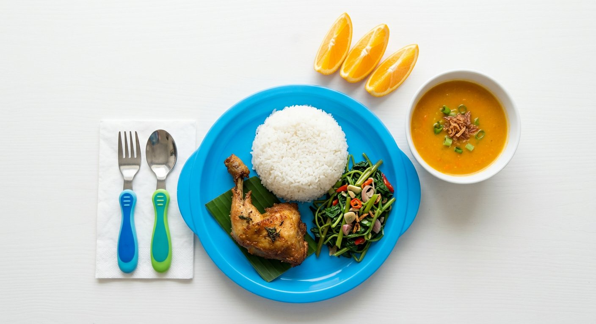
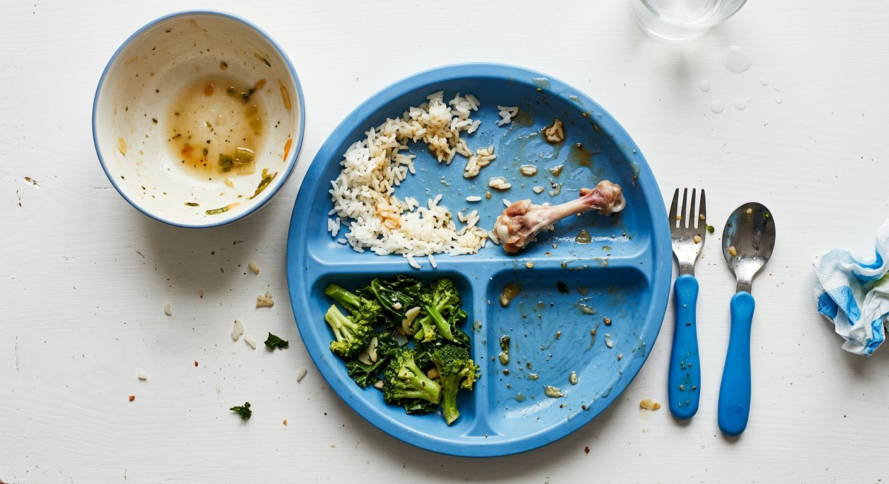

Belum ada anak yang tertaut
Masukkan kode anak dari daycare, contohnya KA-2201.
Garis waktu hari ini
Jadwal harian
- 07.00–08.15
- Kedatangan dan cek suhu
- 08.15–10.00
- Bermain terarah
- 10.00–10.20
- Camilan pagi
- 11.45–12.30
- Makan siang
- 13.00–14.30
- Tidur siang
- 15.00–15.20
- Camilan sore
- 16.00–17.30
- Penjemputan
Ruang Bermain Utama
Memuat…
 Kamera 1 · Langsung
Kamera 1 · Langsung
Privasi: anak lain diburamkan
Rekaman: terhapus setelah 7 hari
Akses: tercatat di daycare
Ruangan
- Ruang Bermain Utama
- Kamera 1
- Ruang Tidur Anak
- Kamera 2
- Ruang Makan
- Kamera 3
- Dapur
- Hanya staf
Ada yang mengkhawatirkan? Hubungi daycare di +62 22 2034 5510.
Makan siang hari ini


| Menu | Disajikan (g) | Sisa (g) | Dimakan (g) | Energi (kkal) | Protein (g) |
|---|
Asupan hari ini
Dibandingkan kebutuhan harian anak.
Makan siang 7 hari terakhir
Suhu tubuh hari ini
| Pukul | Suhu | Status | Diukur oleh |
|---|
Obat yang diberikan
Profil kesehatan
Perubahan alergi atau obat dilakukan lewat admin daycare.
Pemberitahuan
Laporan harian
Dapat dicetak atau disimpan sebagai PDF.